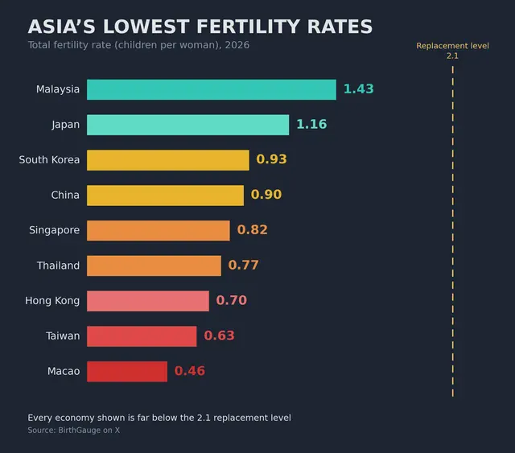
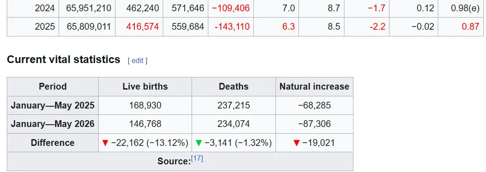

유럽은 140년 걸려 도달한 고령화를 태국은 단 40년만에 달성할 가능성이 높음
반등 조차 안하고 폭락만 할 가능성도 높고

거기에 올해 출생아가 16% 폭락해서 ㄷㄷ

가난한데 애도 안낳아서 미래가 없음
일본 유럽은 부유한 상태로 늙었고
한국은 부유해지다가 늙었고
태국은 거지인 상태에서 늙어버림 ㄷㄷ
유럽은 140년 걸려 도달한 고령화를 태국은 단 40년만에 달성할 가능성이 높음
반등 조차 안하고 폭락만 할 가능성도 높고

거기에 올해 출생아가 16% 폭락해서 ㄷㄷ

가난한데 애도 안낳아서 미래가 없음
일본 유럽은 부유한 상태로 늙었고
한국은 부유해지다가 늙었고
태국은 거지인 상태에서 늙어버림 ㄷㄷ
한국은 충분히 부유한데 뭐가 문제임?
이렇게 평화롭던 시대는 저물고 새로운 나라가 생겨나는데...
어어 ... 하일 ....
나인 나인 나인!!!!!
어떻게 될지 몰겠음... 지금 태어나는 애들 백수 확정이라서 전부 ai 로 대체되고 100명 중 한명만 관리자로 취직되고 젊은이들이 노인 뿐만 아니라 동년배 기초수급자까지 책임져야하는 미래 올수도
내 밥줄은 챙겼는데 내 자식 밥줄은 어케될지 모르겠다
그래도 동남아 1짱인데 나름 ㅋㅋ
한 100~200 년 뒤면 이슬람 아닌 애들은 자연적으로 도태 되고 이슬람만 남겠어 출산율 1인 상태로 30년 주기로 7번 돌면 인구의 1% 도 안남아
Sns 영향
이래서 베트남 애들이 혀가 길구나
예전에는 자식들이 노동력이라 많이 낳았는데
이젠 그냥 돈 들어가는게 비싸니
아예 안낳네
일본 사는데 저출산의 여파가 고스란이 느껴짐.
기업은 사람 없어서 빌빌대고, 세금 허리 빠짐.
꼬쿤캅~~
빈부격차도 심해서 자녀출산 생각이 없을거 같음
진짜 sns 가 영향이 큰듯...
기존엔 그냥 사람사는게 원래 이런갑다~ 인생은 고통이야~ 하면서 살던 사람들이 재벌이나 갑부의 인생을 알게되고 내 자식도 저정돈 아니더라도 비슷하겐 키우고 싶다면서 상대적 박탈감이나 내가 왜 저사람들의 발판이 되어줘야하나? 저사람들을 위한 일꾼이 되어줘야하나? 이런 생각이 퍼지면서 탕핑족이나 히키코모리족도 생기고 영향이 꽤 큰듯. 괜히 선진국들이 먼저 sns 를 제한하기 시작한게 이유가 잇는거 같음
너왜 애낳냐도 큼
예쁜애들이 한국에 팔려가서 그런가? 아 그건 비엣남이지.
남자가 없어서? 있어도 성전환해서?
생각이라는걸 하는 애들은
가난한데 애를 낳는다고?라는 의문을 갖지
일류는 무엇을 향해 나아가는가
우리 나라 0.9 많이 올라왔네 ㄷㄷ
가임기 여성수가 줄어서 통계상 그렇게 보이는 거지.. 일본 출산률이 높아보이는 것도 같은 이유고
태국은...생리적으로 임신이 불가능한 사람에 박...아니다
전근대시절 농경사회는 애 하나하나가 다 노동력이었지만 이젠 애를 낳아서 그애가 커도 먹고살 직업이 있을지 알수없잖아. 태어난애들이 다들 의사 공무원 삼전하닉직원이 될수있는것도 아니고
인구가 소비의 주체로서의 기능만 하게될것같아서.... 이게 맞는방향인건가 싶기도하고. 모르겟다 ㅋㅋㅋㅋㅋㅋ
쟤네는 왜 저럼?
대만 진짜 좆되노
지난주에 방콕 잠깐 갔었는데
%커피 레귤러사이즈 아아 한잔에 5800원
몰에 있는 맥주집 500미리 한잔에 만원 중반대
도심지 깔끔한 곳 물가는 서울보다도 더 비싸더라- 소득 생각하면 말이 안되는 수준임
방콕물가는 진짜 미침
우리나라 출생률은 25년에 올랐고 26년에는 작년보다 훨씬더 올랐다는데
딱 지금이 80 90 00 세대가 한꺼번에 낳는다고 함
서울사는 사촌 이번에 애가 돌인데 다문화 버프 받고도 어린이집 대기번호 00번대 받고 못보내서 안달이더라
한국 정도면 부유한 것 맞음